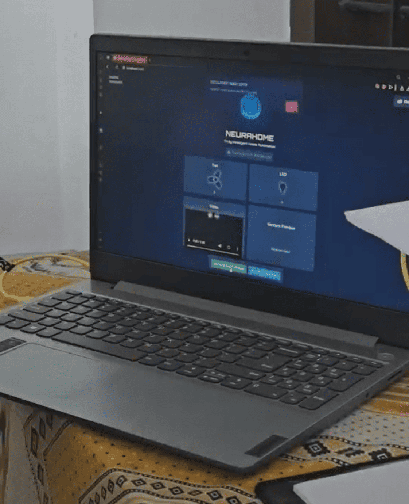
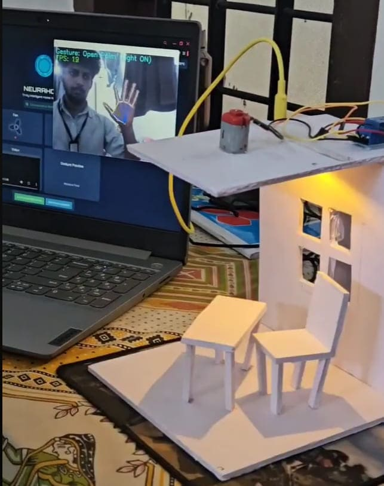

LOG_03 // AI_SMART_SYSTEMS
NEURAHOME
NEURAHOME
VOICE & CV LOGIC


Most smart homes require rigid commands like "Hey Google". NeuraHome uses Generative AI (Gemini) to understand natural intent. Phrases like "It's too dark in here" or "Illuminate the room" both trigger the same LED_ON command via semantic understanding.

The system is a hybrid. A Python script runs MediaPipe for Hand Gesture Recognition while simultaneously listening for voice input. All commands are routed via WebSockets to the ESP32, which handles the physical switching of fans and lights.
Team: Shahazad Abdulla, Sidharth Sajith